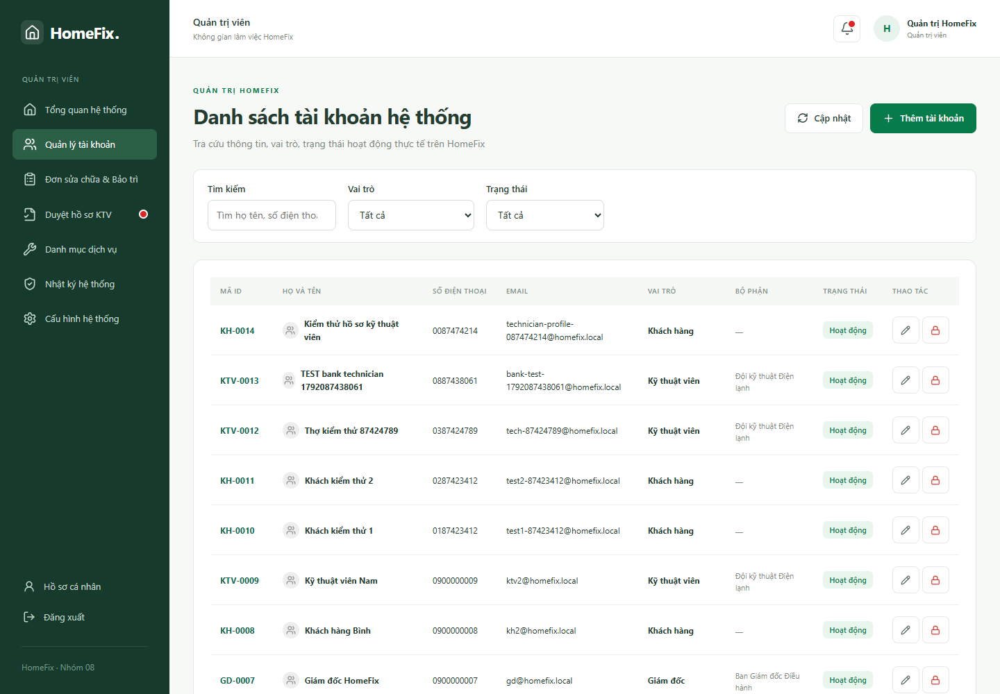

Quản trị viên: tài khoản, danh mục và cấu hình
- Mở Quản lý tài khoản; tìm theo định danh, kiểm tra đúng người trước khi cập nhật.
- Khi tạo tài khoản nội bộ, chọn đúng vai trò. Khi khóa/ngừng hoạt động, kiểm tra ảnh hưởng công việc đang xử lý.
- Quản lý danh mục dịch vụ: tên, nhóm, phí và tỷ lệ theo dữ liệu hợp lệ. Dịch vụ đã có lịch sử nên ngừng cung cấp thay vì xóa phá quan hệ.
- Mở hồ sơ đăng ký KTV, kiểm tra các thông tin/ảnh được yêu cầu trước khi quyết định.
- Thay đổi cấu hình theo quyền và kiểm tra phiên bản; mở nhật ký để truy lại tác nhân và thời điểm.


Quản lý tài khoản — bấm ảnh để xem kích thước gốc.
Quyền ADMIN trên web không tự đồng nghĩa sysadmin của SQL Server. Tác vụ sao lưu/phục hồi do người quản trị CSDL có quyền phù hợp thực hiện. Không công bố .env, mật khẩu, OTP hoặc ảnh định danh trong tài liệu dùng chung.